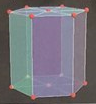
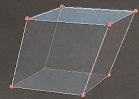
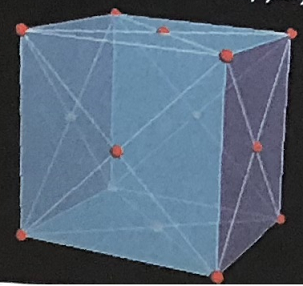
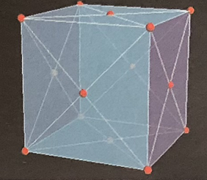

H - Водород

Почему светят звезды? Потому что в их недрах атомы водорода превращаются в атомы гелия. Одно только Солнце ежесекундно перерабатывает более 600 миллионов тонн водорода, производя 596 миллионов тонн гелия. Подумайте только: 600 миллионов тонн в секунду. Даже ночью!
А куда деваются еще 4 миллиона тонн? В соответствии со знаменитой формулой Эйнштейна E=mc2 они превращаются в энергию. На Землю приходится ничтожная доля этой энергии, эквивалентная примерно 1,6 килограмма водорода в секунду. И все же благодаря этому на Земле есть жизнь, и мы с вами можем любоваться восходами и закатами, нежиться на солнышке.
Нам необходим водород Солнца, однако и прямо здесь, на Земле, без него не обойтись. Соединяясь с водородом, он образует воду – океаны, реки, озера и облака. А вместе с углеродом, азотом и кислородом водород образует плоть и кровь всего живого.
Водород – самый легкий газ. Он легче гелия и намного дешевле его, поэтому водородом наполнил первые дирижабли. Вы, конечно, слышали историю крушения «Гинденбурга». Так вот, люди тогда погибли не в пламени, а из-за травм, вызванных падением с высоты. Водород в некоторых отношения безопаснее бензина, которым вы заправляете автомобиль.
Элемент был обнаружен британским ученым Генри Кавендишем в 1766 году. Происхождение названия восходит к греческим словам «гидро» и «генов», что означает «вода» и «генератор». Еще в 1671 году Роберт Бойл (1627-1691, английский химик и физик) опубликовал статью «Новые эксперименты, касающиеся отношения между пламенем и воздухом», в которой он описал реакцию между железными опилками и разбавленными кислотами. В процессе экспериментов ученый заметил, что реакция данных веществ приводит к эволюции газообразного водорода («горючий раствор Марса»). Однако только в 1766 году газ был утвержден в качестве основного элемента Генри Кавендишем (1731-1810, английский химик и физик, который также открыл азот), использовавшим для синтеза ртуть. Ученый охарактеризовал его как «легковоспламеняющийся воздух из металлов». Кавендиш точно описал свойства водорода, но ошибочно считал, что газ происходит от металла, а не от кислоты. Современное название химическому элементу дал французский естествоиспытатель А. Л. Лавуазье. История открытия водорода (H) на этом не заканчивается. В 1931 году профессором химии Гарольдом Юри, работавшим в Чикаго (США), был обнаружен газ дейтерий.
Водород – самый легкий и распространённый в природе элемент. Его атом состоит всего из одного протона и одного электрона, и за это водород очень любят физики: его поведение очень точно описывается их любимыми квантово-механическими формулами. Когда же дело доходит до гелия с его двумя протонами и двумя электронами, физики умывают руки, уступая место химикам.
На долю водорода приходится около 92% всех атомов Вселенной. Он основная составная часть вещества звезд и межзвездного газа, в виде соединений образует атмосферу многих планет. На Земле доля атомов водорода 17%, он входит в состав самого распространенного вещества - воды, в состав соединений образующих живые организмы, где доля его атомов около 50%. В то же время массовая доля водорода на Земле (земная кора + гидросфера) около 1,5%
Атомная масса: 1, 00794
Плотность: 0,0000899
Атомный радиус: 53 пм
Атомарный водород используется для атомно-водородной сварки. Жидкий водород - один из видов ракетного топлива. В водородно-кислородных топливных элементах водород используется для непосредственного преобразования энергии химической
реакции в электрическую. Как восстановитель при получении некоторых металлов, для получения твердых жиров гидрированием растительных масел. В химической промышленности - получение аммиака, хлороводорода и др. Пероксид водорода: 3%-ный
раствор применяют в медицине, косметологии, в промышленности для отбеливания соломы, перьев, клея, мехов, кожи и т.д., 60%-ный раствор применяют для отбеливания жиров и масел. Сильно концентрированные растворы (85-90%) в смеси с некоторыми
горючими веществами применяются для получения взрывчатых смесей, как окислитель в ракетных и торпедных двигателях.
Как восстановитель при получении некоторых металлов, для получения твердых жиров гидрированием растительных масел. В химической промышленности - получение аммиака, хлороводорода и др.
Пероксид водорода: 3%-ный раствор применяют в медицине, косметологии, в промышленности для отбеливания соломы, перьев, клея, мехов, кожи и т.д., 60%-ный раствор применяют для отбеливания жиров и масел. Сильно концентрированные растворы (85-90%) в смеси с некоторыми горючими веществами применяются для получения взрывчатых смесей, как окислитель в ракетных и торпедных двигателях.

Состояние вещества.

Спектр излучения атома.

Заполненные электронные орбитали.
Na - Натрий

Натрий – самый взрывоопасный и самый вкусный из всех щелочных металлов (элементов первого столбца периодической таблицы).
Взрывоопасен он оттого, что при попадании в воду немедленно начинает выделять из нее газообразный водород, который через несколько секунд взрывается с оглушительным грохотом, расшвыривая во все стороны частички горящего натрия.
Самый вкусный натрий оттого, что вместе с хлором он образует хлорид натрия, или поваренную соль, без которой еда не в радость. Хлорид калия также имеет соленый вкус. Его даже продает как заменитель соли для безнатриевой диеты, однако он имеет металлический привкус. Хлориды рубидия и цезия еще менее солены и еще больше отдают металлом, а хлорид лития и вовсе вызывает изжогу, сопровождающуюся металлическим послевкусием.
Название "натрий" произошло от древнего слова, которое сравнительно широко распространено в Египте, а так же у древних греков и римлян. Это слово можно было встретить у Плиния (Nitron), у других древних авторов. В древнем Египте натроном, или нитроном, называли вообще щелочь, которую получали из природных содовых озер, а также из золы растений. Ее употребляли для мытья, изготовления глазурей, при мумификации трупови для других целей. Арабские алхимики называли щелочи alkali. С открытием пороха в Европе селитру стали строго отличать от щелочей, и в XVII в. уже различали нелетучие, или фиксированные щелочи, и летучую щелочь . Вместе с тем было установлено различие между растительной и минеральной щелочью. В конце XVIII в. Клапрот ввел для минеральной щелочи название натрон (Natron), или натр и для растительной - кали (Kali), Лавуазье не поместил щелочи в "Таблицу простых тел", указав в примечании к ней, что это, вероятно, сложные вещества, которые когда-нибудь будут разложены. Действительно, в 1807 г. Дэви путем электролиза слегка увлажненных твердых щелочей получил свободные металлы - калий и натрий, назвав их потассий и содий. В следующем году Гильберт, издатель известных "Анналов физики", предложил именовать новые металлы калием и натронием; Берцелиус сократил последнее название до "натрий". В начале XIX в. в России натрий называли содием (Двигубский, 1821; Соловьев, 1824); Страхов предлагал название содь (1825). Соли натрия назывались, например, сернокислая сода, гидрохлоровая сода и одновременно уксусный натр (Двигубский, 1828). Гесс, по примеру Берцелиуса, ввел название натрий.
Натрий находится на седьмом месте в списке самых распространенных на Земле элементов. Также натрий является пятым по счету среди самых распространенных металлов. Натрий не встречается в природе в чистом виде. Причина этому – высокая химическая активность натрия. Элемент встречается в природе в виде хлорида, карбоната, нитрата, сульфата и других солей.
Где же встречается натрий в природе?
Во-первых, достаточно большое содержание натрия зафиксировано в земной коре. Доля вещества составляет примерно 2,6%. Во-вторых, натрий и его соединения в большом количестве встречаются
в местах испарения древних морей. Еще одним местом скопления натрия и его соединений являются океанические воды. Ученые подсчитали, что вся соль, которая, есть в Мировом океане, составляет объем около 19 миллионов кубических километров.
Также натрий в небольших количествах содержится в живых существах. При этом содержание натрия в животных несколько выше, чем в растениях. Ионы натрия в живых организмах выполняют важнейшую функцию: способствуют передаче нервных импульсов.
Атомная масса: 22,989770
Плотность: 0,968
Атомный радиус: 190 пм
Чистый металлический натрий используют как восстановитель в химической промышленности. Также расплавленный натрий применяется в некоторых типах ядерных реакторов для отводов тепла к паровым турбинам. Что вы сами, несомненно, видели,
так это лампы, наполненные парами натрия. Они в числе рекордсменов по применение электрической энергии в свет, как только их желтоватый свет придает лишь мертвенный оттенок.
Применение натрия основано исключительно на его химических свойствах. У магния к химическим добавляются конструкционные.


Al - Алюминий

Алюминий близок к идеалу. Чего не хватает этому металлу, так это дешевизны и легкости сварки, свойственной железу (26), и удобства литья, как у цинка (30) или олова (50). Но в целом он очень хорош: достаточно легкий и прочный, чтобы из него можно было изготавливать фюзеляжи самолетов, за исключением высокоскоростных истребителей, и в то же время достаточно дешевый для кухонной посуды.
«Фирменное» преимущество алюминия над железом состоит в том, что он не ржавеет. Факт удивительный, ведь алюминий реагирует с кислородом намного легче, чем железо. Разница в том, что «ржавчина» алюминия - прозрачный оксид, известный как корунд, одно из самых твердых веществ. На воздухе алюминий покрывается тонким слоем этого материалом, более прочного, чем сам металл, тогда как на поверхности «недальновидного» железа образуется красная рыхлая пленка, которая легко разрушается, обнажая металл для дальнейшего окисления.
Первые попытки получить алюминий только в середине XIX века. Попытка, предпринятая датским учёным Х.К.Эрстедом, увенчалась успехом. Для получения он использовал амальгированный калий в качестве восстановителя алюминия из оксида. Но что за металл был получен тогда, выяснить так, и не удалось. Через некоторое время, через два года, алюминий был получен немецким ученым-химиком Велером, который получил алюминий, используя нагревание безводного хлорида алюминия с металлическим калием.
Многие годы труда немецкого ученого не прошли даром. За 20 лет он сумел приготовить гранулированный металл. Он оказался похожим на серебро, но был значительно легче его. Алюминий был очень дорогим металлом, и вплоть до начала XX века, его стоимость была выше стоимости золота. Поэтому многие-многие годы алюминий использовался как музейный экспонат.
Около 1807 г. Дэви попытался провести электролиз глинозема, получил металл, который был назван алюмиумом (Alumium) или алюминумом (Aluminum), что в переводе с латинского - квасцы.
Получение алюминия из глин интересовало не только ученых-химиков, но и промышленников. Алюминий очень тяжело было отделить от других веществ, это способствовало тому, что он был дороже золота. В 1886 году химиком Ч.М. Холлом был предложен способ, который позволил получать металл в больших количествах. Проводя исследования, он в расплаве криолита растворил оксид алюминия. Полученную смесь поместил в гранитный сосуд и пропустил через расплав постоянный электрический ток. Он был очень удивлен, когда через некоторое время на дне сосуда он обнаружил бляшки чистого алюминия. Этот способ и в настоящее время является основным для производства алюминия в промышленных масштабах. Полученный металл всем был хорош, кроме прочности, которая была необходима для промышленности.
Минералы алюминия чрезвычайно распространены. Среди них такие ценные молификации, как корунд (основа рубина и сапфира) и берилл (основа изумруда и аквамарина). Алюминий в минералах и скальных породах составляет значительную долю земной коры, как и его сосед по периодической таблице - кремний.
Атомная масса: 26,981538
Плотность: 2,7
Атомный радиус: 118 пм
Сам по себе алюминий очень активен. Его порошок - основной компонент фотовспышек и ракетного топлива (поэтому вы не найдете в продаже порошка алюминия с размером частиц ниже определенной величины).

Состояние вещества.

Спектр излучения атома.

Заполненные электронные орбитали.
He - Гелий
Этот химический элемент назван в честь Гелиоса, греческого бога Солнца, поскольку первые свидетельства его существования были получены при анализе спектра солнечного света (некоторые линии не принадлежали ни одному известному в то время элементу).
Кажется удивительным, что это элемент, распространенный на Земле настолько, что им наполняют воздушные шары, был первым, открытым в космосе. Дело в том, что гелий относится к благородным газам, не вступающим в реакцию с большинством элементов и остающимся недоступными практически для любого химического связывания. Поэтому-то гелий нельзя было определить традиционными химическими методами.
Абсолютно негорючий гелий – отличная замена водороду в баллонах дирижаблей, однако он намного дороже и, кроме того, создает меньшую подъемную силу. Кому же хочется кататься на развалюхе?
Гелий, которым мы сейчас пользуемся, извлекают из природного газа, выходящего из недр Земли. Но, в отличие от других стабильных элементов, он не присутствует с момента образования планеты. Гелий образуется в результате радиоактивного распада урана и тория. Это элементы распадаются, испуская альфа-частица, а то, что физики называют альфа-частицей, есть не что иное, как ядро атома гелия. Так что когда вы перед праздником надуваете воздушные шары, вы наполняете их атомы, которые несколько миллионов лет назад были просто протонами и нейтронами больших радиоактивных атомов. Странно, правда? И все же менее странно, чем то, как литий морочит нам голову.
18 августа 1868 года французский учёный Пьер Жансен во время полного солнечного затмения в индийском городе Гунтур впервые исследовал хромосферу Солнца. Спектроскопия солнечных протуберанцев наряду с линиями водорода - синей, зелено-голубой и красной - выявила очень яркую жёлтую линию, первоначально принятую Жансеном и другими наблюдавшими её астрономами за линию D натрия. Независимо от него английский астроном Норман Локьер обнаружил в спектре неизвестную жёлтую линию с длиной волны 587,56 нм, и обозначил её как D3. Спустя два года Локьер, совместно с английским химиком Эдвардом Франкландом, пришел к мнению, что эта ярко-жёлтая линия не принадлежит ни одному из ранее известных химических элементов и предложил дать новому элементу название "гелий".
Гелий занимает второе место по распространённости во Вселенной после водорода - около 23% по массе. Однако на Земле гелий редок, образуясь в результате альфа-распада тяжёлых элементов. В рамках восьмой группы гелий по содержанию в земной коре занимает второе место (после аргона). Запасы гелия в атмосфере, литосфере и гидросфере оцениваются в 5·1014 м3. Гелионосные природные газы содержат, как правило, до 2% гелия по объёму (редко 8-16%). Среднее содержание гелия в земном веществе - 3 г/т. Наибольшая концентрация гелия наблюдается в минералах, содержащих уран, торий и самарий. Природный гелий состоит из двух стабильных изотопов: 4He и 3He.
Атомная масса: 4,002602
Плотность: 0,0001785
Атомный радиус: 31 пм
Уникальные свойства гелия широко используются:
- - в металлургии в качестве защитного инертного газа для выплавки чистых металлов
- - в пищевой промышленности зарегистрирован в качестве пищевой добавки E939, в качестве пропеллента и упаковочного газа
- - в качестве хладагента для получения сверхнизких температур
- - для наполнения воздухоплавающих судов (дирижабли), воздушных шаров и оболочек метеорологических зондов
- - в качестве теплоносителя в некоторых типах ядерных реакторов; - в качестве носителя в газовой хроматографии
- - для поиска утечек в трубопроводах и котлах
- - для заполнения газоразрядных трубок
- - как компонент рабочего тела в гелий-неоновых лазерах
- - в технике нейтронного рассеяния в качестве поляризатора и наполнителя для позиционно-чувствительных нейтронных детекторов
- - в дыхательных смесях для глубоководного погружения
- - для изменения тембра голосовых связок (эффект повышенной тональности голоса) за счет различия плотности обычной воздушной смеси и гелия, и т.д.

Состояние вещества.

Спектр излучения атома.

Заполненные электронные орбитали.
Li - Литий
Литий — очень мягкий и легким металл. Он настолько легок, что плавает на поверхности воды. Этот трюк из металлов под силу только натрию (П). С водой литии реагирует, выделяя с постоянной, умеренной скоростью газообразный водород. (Настоящее веселье в этой группе элементов начинается с натрия.)
Несмотря на свою высокую химическую активность, литий широко используется в производстве потребительских товаров. Металлический литий есть в литий-ионных аккумуляторах, обеспечивающих энергией бесчисленные устройства, от кардиостимуляторов до автомобилей (и лэптопов, на одном из которых я печатаю этот текст). Литий-ионные аккумуляторы запасают огромное количество энергии на единицу веса, отчасти благодаря ни 1кой плотности лития. Стеарат лития входит в состав популярных литиевых смазок, используемых в легковых автомобилях, грузовиках, других механизмах.
На нашей планете есть только одно место, где можно достаточно легко добывать литий в большом объеме. Если в мире появится много электромобилей на литий-ионных батареях, это место — Боливия — будет у всех на слуху.
Ионы лития знамениты своей способностью поддерживать устойчивое эмоциональное состояние. С чем это связано, до конца не ясно, но как бы то ни было, карбонат лития (который растворяется в организме с образованием ионов лития) снимает как перевозбуждение, так и апатию. Это ли не яркое свидетельство того, что химия способна управлять даже такими сложными явлениями, как эмоции?
В 1817 г. шведский химик и минералог Август Арфведсон, анализируя природный минерал петалит, установил, что в нем содержится "огнепостоянная щелочь до сих пор неизвестной природы". Позднее он нашел аналогичные соединения в составе других минералов. Арфведсон предположил, что это соединения нового элемента и дал ему название литий (от греческого камень). Металлический литий был выделен в 1818 году английский химиком Гемфри Дэви электролизом расплава гидроксида лития.
Литий довольно широко распространен в земной коре, его содержание в ней составляет 6,5·10–3% по массе. Как уже упоминалось, основные минералы, содержащие литий, — это петалит (содержит 3,5-4,9 % Li2O), сподумен (6-7 % Li2O), лепидолит (4-6 % Li2,O) и амблигонит LiAl [PO4] — 8-10 % Li2,O. В виде примеси литий содержится в ряде породообразующих минералов, а также присутствует в рапе некоторых озер и в минерализованных водах. В морской воде содержится около 2·10-5 % лития.
Атомная масса: 6,941
Плотность: 0,535
Атомный радиус: 167 пм
Из лития изготовляют аноды химических источников тока, работающих на основе неводных твердых электролитов. Жидкий литий может служить теплоносителем в ядерных реакторах.
Литий и его соединения широко применяют в силикатной промышленности для изготовления специальных сортов стекла и покрытия фарфоровых изделий, в черной и цветной металлургии (для раскисления, повышения пластичности и прочности сплавов), для получения пластичных смазок. Соединения лития используются в текстильной промышленности (отбеливание тканей), пищевой (консервирование) и фармацевтической (изготовление косметики).


Be - Бериллий

Бериллий – легкий металл. Он в 3,5 раза плотнее лития, но существенно легче алюминия. Если литии – мягкий, легкоплавкий и реакционноспособный, то бериллий – твердый, плавится при высокой температуре, довольно устойчив к коррозии.
Эти свойства, вкупе с его высокой стоимостью и ядовитостью, определяют уникальную область применения бериллий. Это ракетостроение, где стоимость не имеет большого значения, где бал правит легкость в сочетании с прочностью и где токсичность материала представляет собой наименьшую проблему.
Бериллий хорош и во многом другом. Например, прозрачен для рентгеновских лучей, поэтому из него делают окна в рентгеновских трубках, которые должны быть достаточно прочными, чтобы выдерживать высокий вакуум, и достаточно тонкими, чтобы пропускать излучение. Добавление бериллия в медь дает высокопрочный не искрящий материал, из которого изготавливают инструменты для работы с взрывоопасными газами, а также на нефтяных скважинах.
Из всех видов спорта гольф, вероятно, наиболее восприимчив к достижениям высоких технологий. Многие верят, что клюшки с головками из сплава бериллия с медью обеспечат точное попадание мячика в лунку.
Образец сочетания красоты и твердости – минерал берилл, кристаллическая форма алюмосиликата бериллия. Возможно, нам лучше знакомы зеленая и синяя разновидности бериллия – изумруд и аквамарин.
Итак, бериллий – это металл в стиле Джеймса Бонда. Он запускает ракеты и очаровывает женщин.
Бериллий был открыт в 1798 году Л. Вокленом в виде берилловой земли (оксида ВеО), когда этот французский химик выяснял общие особенности химического состава драгоценных камней берилла и изумруда. Металлический бериллий был получен в 1828 г. Ф. Велером в Германии и независимо от него А. Бюсси во Франции. Однако из-за примесей его не удавалось сплавить. Лишь в 1898 г. французский химик П. Лебо, подвергнув электролизу, двойной фторид калия и бериллия, получил достаточно чистые металлические кристаллы бериллия. Интересно, что из-за сладкого вкуса растворимых в воде соединений бериллия элемент вначале называли "глюциний" (от греческого glykys - сладкий). Из-за сходства свойств бериллия и алюминия считалось, что это трехвалентный металл с атомной массой 13,5. Эту ошибку исправил Д.И. Менделеев, который, исходя из закономерности изменения свойств элементов в периоде, определил бериллию место во второй группе.
Бериллий относится к редким элементам, его содержание в земной коре 2,6·10-4% по массе. В морской воде содержится до 6·10-7 мг/л бериллия. Основные природные минералы, содержащие бериллий: берилл Be3Al2(SiO3)6, фенакит Be2SiO4, бертрандит Be4Si2O8·H2O и гельвин (Mn,Fe,Zn)4[BeSiO4]3S. Окрашенные примесями катионов других металлов прозрачные разновидности берилла - драгоценные камни, например, зеленый изумруд, голубой аквамарин, гелиодер, воробьевит и другие.
Атомная масса: 9,012182
Плотность: 1,848
Атомный радиус: 112 пм
Бериллий в основном используют как легирующую добавку к различным сплавам. Добавка бериллия значительно повышает твердость и прочность сплавов, коррозионную устойчивость поверхностей изготовленных из этих сплавов изделий. Бериллиевые
бронзы (Cu и 3-6% Be) – материал для пружин c большой устойчивостью к механической усталости и совершенно не дающих искр при механических ударах. Бериллий слабо поглощает рентгеновское излучение, поэтому из него изготавливают окошки
рентгеновских трубок (через которые излучение выходит наружу). В атомных реакторах из бериллия изготовляют отражатели нейтронов, его используют как замедлитель нейтронов.

Состояние вещества.

Спектр излучения атома.

Заполненные электронные орбитали.
B - Бор

Бедняга Бор! Разве с таким именем можно рассчитывать хоть на каплю уважения? Тем более что бор чаще всего добывают из боракса (буры), компонента моющих средств. Но бор кошернее, чем вы думаете.
Соедините бор с азотом, и получите кристалл, похожий на тот, что образует углерод, то есть на алмаз. Кристаллы кубического нитрида бора по твердости не уступают алмазу, при этом они намного дешевле и устойчивее при нагревании. Это делает их популярным абразивным материалом в производстве металлоконструкций.
Выполненные недавно теоретические расчеты показали, что альтернативная кристаллическая форма нитрида бора должна быть в определённых условия тверже даже алмаза. Пока это вещество не получено в виде монокристалла, но это лишь вопрос времени. И тогда алмаз лишится звания самого твердого вещества на свете.
Карбид бора также принадлежит к числу наиболее твердых веществ. За это его уважаю секретные агенты: стоит насыпать немного карбида бора в бензобак автомобиля, и двигатель быстро выйдет из строя из-за царапин на стенках цилиндров. Не меньший интерес для секретных служб представляет способность бора «сшивать» цепи полимеров. Это свойство использует в игрушке «Силли путти», «глупой замазке»: мягкая и пластичная субстанция, которую вы мнете в руках, может обернуться твердым упругим, когда вы швырнете его в стену.
Так что бор – вовсе не замухрышка, как может показаться. Однако куда ему до соседа по периодической таблице – углерода!
С древности людям было известно природное соединение бора, минерал бура (лат. borax). Оно находило применение при выделке кож, для приготовления глазурей и стекол, как флюс в ювелирном деле. В начале 18 века голландский алхимик Вильгельм Гомберг, нагревая буру с серной кислотой, получил вещества, называемые сейчас борной кислотой и борным ангидридом (оксид бора B2O3). В 1808 году почти одновременно французские химики Л.Ж. Гей-Люссак и Л. Тенар и английский химик Г. Дэви прокаливанием борного ангидрида с металлическим калием, получили новое простое вещество, которое по природному минералу получило название Бор. В английском языке сохранилось название Boron, которое дал новому элементу Дэви.
В природе бор в свободном виде не встречается. Важнейшие минералы: бура — Na2B4O7·10H2O, тетраборат натрия, кернит — Na2B4O7·4H2O и другие природные бораты, сассолин (борная кислота) — H3BO3. Соединения бора (бораты, боросиликаты, бороаммосиликаты) часто в небольших концентрациях входят в состав вулканических и осадочных пород. Присутствует в воде озер (особенно горьких) и морей. Содержание бора в земной коре 1·10–3 % по массе (28 место), в воде океанов 4,41·10–4% (4,4 мг/л).
Атомная масса: 10,8111
Плотность: 2,460
Атомный радиус: 87 пм
Бор находит применение в виде добавки при получении коррозионно-устойчивых и жаропрочных сплавов. Поверхностное насыщение стальных деталей бором (борирование) повышает их механические и антикоррозийные свойства. Карбиды бора (В4С и
В13С2) обладают высокой твердостью, это — хорошие абразивные материалы. Ранее их широко использовали для изготовления сверл, применяемых зубными врачами (отсюда название бормашина). Бор (в виде волокон) служит упрочняющим веществом многих
композиционных материалов. Сам бор и его соединения — нитрид BN и другие — используются как полупроводниковые материриалы и диэлектрики.
Около 50% природных и искусственных соединений бора используют при производстве стекол (так называемые боросиликатные стекла), около 30% — при производстве моющих средств. Наконец, примерно 4-5% соединений бора расходуется при производстве эмалей, глазурей, металлургических флюсов.
В медицине как антисептические средства находят применение бура и борная кислота (в виде водно-спиртовых растворов). В быту буру или борную кислоту используют для уничтожения бытовых насекомых, в частности, тараканов (бура, попадая в органы пищеварения таракана, кристаллизуется, и образовавшиеся острые игольчатые кристаллы разрушают ткани этих органов).

Состояние вещества.

Спектр излучения атома.

Заполненные электронные орбитали.
C - Углерод

Углерод — самый важный для жизни химический элемент. Конечно, без многих элементов жизнь была бы невозможна, но именно углерод скрепляет все атомы в биологических молекулах, от двойной спирали ДНК до спутанных колец и лент стероидов и белков. Сам термин «органические соединения» относится исключительно к веществам, содержащим углерод.
Кроме того, углерод породил алмаз — самое твердое из известных веществ (на сегодняшний день; о соперниках говорится в рассказе о боре, элементе 5). Кстати, алмазы не так уж редки, не бесподобно прекрасны и не вечны: это мифы, рожденные компанией «Де Бирс». Алмазы могли бы стоить в 10 раз дешевле, если бы не монополия «Де Бирс». Кубический диоксид циркония или кристаллический карбид кремния не менее восхитительны. А при достаточно высокой температуре алмазы сгорают с образованием банального диоксида углерода.
Атомы углерода способны формировать плоские листы, похожие на пчелиные соты. Сложите стопкой эти листы — и получите графит. Сверните лист — и получите самый прочный из известных науке материалов — углеродную нанотрубку. А еще из атомов углерода можно собрать почти сферический многогранник — фуллерен С60, названный в честь архитектора Бакминстера Фуллера (1895–1983), впервые возведшего такую конструкцию.
Углерод находится в центре споров из-за выбросов в атмосферу диоксида углерода. Мы производим его в 100 тысяч раз больше, чем динозавры со всеми их болотами. Интересно, что ситуация с азотом диаметрально противоположна.
Углерод известен с глубокой древности. Древесный уголь использовали для восстановления металлов из руд, алмаз — как драгоценный камень. В 1789 французский химик А.Л. Лавуазье сделал вывод об элементарной природе углерода. Искусственные алмазы впервые были получены в 1953 шведскими исследователями, но результаты они не успели опубликовать. В декабре 1954 искусственные алмазы получили, а в начале 1955 опубликовали результаты сотрудники компании «Дженерал электрик».
В СССР искусственные алмазы впервые были получены в 1960 группой ученых.
В 1969 в СССР были синтезированы нитевидные кристаллы алмаза при обычном давлении, обладающие высокой прочностью и практически лишенные дефектов. В 1985 Г. Крото обнаружил новую форму углерода —фуллерены С60 и С70 в масс-спектре испаряемого при облучении лазером графита.
Содержание в земной коре 0,48% по массе. Накапливается в биосфере: в живом веществе 18% угля, в древесине 50%, торфе 62%, природных горючих газах 75%, горючих сланцах 78%, каменном и буром угле 80%, нефти 85%, антраците 96%. Значительная часть угля литосферы сосредоточена в известняках и доломитах. Углерод в степени окисления +4 входит в состав карбонатных пород и минералов (мел, известняк, мрамор, доломиты). Углекислый газ CO2 (0,046% по массе) постоянный компонент атмосферного воздуха. Углекислый газ в растворенном виде всегда присутствует в воде рек, озер и морей. В атмосфере звезд, планет и в метеоритах обнаружены вещества, содержащие углерод.
Атомная масса: 12,0107
Плотность: 2,260
Атомный радиус: 67 пм
Свыше 90% всех первичных источников потребляемой в мире энергии приходится на органическое топливо. 10% добываемого топлива используется в качестве сырья для основного органического и нефтехимического синтеза, для получения пластмасс.

Состояние вещества.

Спектр излучения атома.

Заполненные электронные орбитали.
N - Азот
В то время как современная цивилизация извергает диоксид углерода в атмосферу, люди извлекают из нее азот и поглощают его.
Азот, присутствующий в воздухе в форме N2, инертен и, по большому счету, бесполезен. Однако стоит ему превратиться в более активную форму, такую как аммиак (NH3), и он становится важнейшим удобрением. Немногие растения, например бобовые, способны извлекать необходимый для роста азот из воздуха. Зерновые культуры «фиксировать» азот не умеют, поэтому до создания дешевых азотных удобрений поля перед зерновыми засевали бобовыми или люцерной, которые насыщали почву соединениями азота.
Незадолго до Первой мировой войны Фриц Габер разработал технология получения аммиака из азота – одно из важнейших изобретений в истории. Аммонийные удобрения обеспечивают продовольствием треть населения Земли. Работы Габера с хлором привели не к столь гуманным результатам.
Так как растения поглощают диоксид углерода из воздуха, то применение азотных удобрений пусть отчасти ослабляет эффект глобального потепления.
Жидкий азот - дешевая и доступная охлаждающая жидкость. Он кипит при -196°С, так что жидкий азот способен заморозить практически все. Он используется, например, для консервации биологических образцов, развлечений (цветы замораживают, а после разбивают), для приготовления мороженого.
Вокруг нас полно азота - более 78 состава воздуха. А что насчет остальных 22 %? Это главным образом кислород.
Открыт в 1772 шотландским ученым Д. Резерфордом в составе продуктов сжигания угля, серы и фосфора как газ, непригодный для дыхания и горения («удушливый воздух») и в отличие от CO2 не поглощаемый раствором щелочи. Вскоре французский химик А. Л. Лавуазье пришел к выводу, что «удушливый» газ входит в состав атмосферного воздуха, и предложил для него название «azote» (от греч. azoos — безжизненный). В 1784 английский физик и химик Г. Кавендишустановил присутствие азота в селитре (отсюда латинское название азота, предложенное в 1790 французским химиком Ж. Шанталем).
В природе свободный (молекулярный) азот входит в состав атмосферного воздуха (в воздухе 78,09% по объему и 75,6% по массе азота), а в связанном виде — в состав двух селитр: натриевой NaNO3 (встречается в Чили, отсюда название чилийская селитра) и калиевой KNO3 (встречается в Индии, отсюда название индийская селитра) — и ряда других соединений. По распространенности в земной коре азот занимает 17-е место, на его долю приходится 0,0019% земной коры по массе. Несмотря на свое название, азот присутствует во всех живых организмах (1-3% на сухую массу), являясь важнейшим биогенным элементом. Он входит в состав молекул белков, нуклеиновых кислот, коферментов, гемоглобина, хлорофилла и многих других биологически активных веществ. Некоторые, так называемые азотфиксирующие, микроорганизмы способны усваивать молекулярный азот воздуха, переводя его в соединения, доступные для использования другими организмами (см. Азотфиксация). Превращения соединений азота в живых клетках — важнейшая часть обмена веществ у всех организмов.
Атомная масса: 14,0067
Плотность: 0,001251
Атомный радиус: 56 пм
В промышленности газ азот используют главным образом для получения аммиака. Как химически инертный газ азот применяют для обеспечения инертной среды в различных химических и металлургических процессах, при перекачке горючих жидкостей.
Жидкий азот широко используют как хладагент, его применяют в медицине, особенно в косметологии. Важное значение в поддержании плодородия почв имеют азотные минеральные удобрения.


O - Кислород
Если углерод (6) — это основа жизни, то кислород — ее топливо. Способность кислорода реагировать практически с любым органическим соединением — вот что движет жизнью. Горение в кислороде также обеспечивает энергией ваш автомобиль, обогреватель и, если вы работаете в НАСА, ракету. (На самом деле топливо — это вещество, которое сгорает в окислителе. Так что, назвав кислород топливом жизни, я выразился метафорически. С точки зрения химии, правильнее было бы назвать его окислителем жизни).
Атмосфера на 21% состоит из кислорода. Это дает нам готовый источник высокоактивного окислителя. Самолеты преодолевают огромные расстояния, расходуя при этом намного меньше топлива, чем ракеты, поднимающиеся в космос. Это и понятно: ракета летит в безвоздушном пространстве и вынуждена нести с собой запас кислорода, расходуя на это дополнительное топливо.
Следует заметить, что мощность ракеты зависит не столько от топлива, сколько от окислителя — источника кислорода. Например, в качестве топлива для лунной ракеты «Сатурн-5» использовали керосин. (Да, мы достигли Луны благодаря дизельному топливу.) Но успех полета обеспечил не какой-то специальный керосин, а жидкий кислород, расход которого при разгоне составлял 7,65 м3 в секунду.
Зная, насколько активен кислород, вы, возможно, удивитесь, что он является самым распространенным элементом на планете. Он составляет почти половину веса земной коры и 86% веса океанов. Но кора и океаны состоят не из чистого кислорода, а из его соединений. И, как мы узнаем из следующего раздела, чем химически активнее элемент, тем стабильнее его соединения.
Официально считается, что кислород был открыт английским химиком Джозефом Пристли 1 августа 1774 путём разложения оксида ртути в герметично закрытом сосуде (Пристли направлял на это соединение солнечные лучи с помощью мощной линзы). Однако Пристли первоначально не понял, что открыл новое простое вещество, он считал, что выделил одну из составных частей воздуха (и назвал этот газ "дефлогистированным воздухом"). О своём открытии Пристли сообщил выдающемуся французскому химику Антуану Лавуазье. В 1775 А. Лавуазье установил, что кислород является составной частью воздуха, кислот и содержится во многих веществах. Несколькими годами ранее (в 1771-м) кислород получил шведский химик Карл Шееле. Он прокаливал селитру с серной кислотой и затем разлагал получившийся оксид азота. Шееле назвал этот газ "огненным воздухом" и описал своё открытие в изданной в 1777 году книге (именно потому, что книга опубликована позже, чем сообщил о своём открытии Пристли, последний и считается первооткрывателем кислорода).
В воздухе.
Атомная масса: 15.9994
Плотность: 0.001429
Атомный радиус: 48 пм
Широкое промышленное применение кислорода началось в середине ХХ века, после изобретения турбодетандеров — устройств для сжижения и разделения жидкого воздуха.
- - В металлургии: Конвертерный способ производства стали, сварка и резка металлов
- - Ракетные двигатели: Смесь жидкого кислорода и жидкого озона один из самых мощных окислителей ракетного топлива (удельный импульс смеси водород-озон превышает удельный импульс для пары водород-фтор и водород-фторид кислорода). В качестве окислителя для ракетного топлива применяется также жидкий кислород, пероксид водорода, азотная кислота и другие богатые кислородом соединения.
- - В медицине: кислород используется для обогащения дыхательных газовых смесей (аэронетики) при нарушении дыхания, для лечения астмы, в виде кислородных коктейлей, кислородных подушек и т.д.
- - В пищевой промышленности кислород зарегистрирован в качестве пищевой добавки E948, как пропеллент и упаковочный газ.


F - Фтор

Фтор — один из самых химически активных элементов. Направьте струю газообразного фтора почти на что угодно, и вещь вспыхнет. Это касается даже веществ, которые считаются негорючими, например, стекло.
Чем активнее элемент, тем стабильнее его соединения. Когда мы говорим, что фтор очень активен, мы подразумеваем, что при его соединении с другими элементами выделяется много энергии. Образующиеся соединения устойчивы потому, что для их разрушения необходимо затратить столь же большое количество энергии. Эту энергию должен обеспечить реагент. Отметим, что реагенты, способные разрушить соединения фтора, можно перечесть по пальцам.
Самое известное высокостабильное соединение фтора — тефлон. Его открыли случайно. Столько важных соединений было открыто случайно, что химики могут показаться просто разгильдяями. Или наоборот, людьми, наделёнными необычайной интуицией и умеющими изыскать выгоду даже из неудач. Вместо тефлона ученые пытались получить первый фторхлоруглерод - легкокипящий хладагент для кондиционеров и холодильников, а получили твёрдый белый полимер. Кстати, фторхлоруглеродосодержащие хладагенты сейчас запрещены, потому что разрушают озоновый слой атмосферы, а тефлон используется поныне. Он устойчив к действиям фактически всех веществ и в то же время очень скользкий. Поэтому он много где применяется: от сковородок до бутылей для хранения кислот.
Фтор важен своими устойчивыми соединениями. Неон никаких стабильных соединений не образует.
Фтор - желтоватый газ, бурно реагирующий почти со всем, включая стекло. Чистый кварц все же удерживает его какое-то время.
Первое соединение фтора - флюорит (плавиковый шпат) CaF2 - описано в конце XV века под названием "флюор" (от fluere - "течь", по свойству этого соединения понижать температуру плавления руды и увеличивать текучесть расплава). В 1771 году Карл Шееле получил плавиковую кислоту. Как один из элементов плавиковой кислоты, элемент фтор был предсказан в 1810 году, а выделен в свободном виде лишь 76 лет спустя Анри Муассаном в 1886 году электролизом жидкого безводного фтористого водорода, содержащего примесь кислого фторида калия KHF2. Название "фтор" (от греч. fqoroz - разрушение), предложенное Андре Ампером в 1810 году, употребляется в русском и некоторых других языках; во многих странах приняты названия, производные от латинского "Fluor".
Содержание фтора в земной коре довольно велико и составляет 0,095% по массе (значительно больше, чем ближайшего аналога фтора по группе — хлора). Из-за высокой химической активности фтор в свободном виде, разумеется, не встречается. Важнейшие минералы фтора — это флюорит (плавиковый шпат), а также фторапатит 3Са3(РО4)2·СaF2 и криолит Na3AlF6. Фтор как примесь входит в состав многих минералов, содержится в подземных водах; в морской воде 1,3·10-4% фтора.
Атомная масса: 18,9984032
Плотность: 0,001696
Атомный радиус: 42 пм
Газообразный фтор используется для получения:
- - гексафторида урана UF6 из UF4, применяемого для разделения изотопов урана для ядерной промышленности,
- - трёхфтористого хлора ClF3 - фторирующий агент и мощный окислитель ракетного топлива,
- - шестифтористой серы SF6 - газообразный изолятор в электротехнической промышленности,
- - фреонов - хороших хладагентов,
- - тефлонов - химически инертных полимеров,
- - гексафтороалюмината натрия - для последующего получения алюминия электролизом и т.д.


Ne - Неон

Неон редко держится в тени. Там, где сияет реклама, он непременно присутствует. Часто пишут, что Таймс-сквер и Лас-Вегас «купаются в неоне»: настолько прочна ассоциация между элементом и самым распространенным способом его применения.
В отличие от «платиновых» кредиток, в которых нет и следа платины, некоторые «неоновые» огни, например оранжево-красные, действительно содержат неон. При пропускании высоковольтного разряда через трубку, наполненную неоном при низком давлении, она вспыхивает изнутри ярким оранжево-красным светом.
Оливер Сакс в восхитительной книге «Дядюшка Вольфрам» описывает свою прогулку по Таймс-сквер со спектроскопом в кармане. Он был очарован огромным количеством обнаруженных спектральных линий. Большая часть их принадлежала неону, который обладает уникальным по богатству спектром, непохожим на спектры других элементов и люминофоров.
Гелий-неоновые лазеры были первыми коммерческими непрерывными лазерами, и хотя сейчас их вытесняют более дешевые устройства на основе светодиодов, они сохраняют свое значение. Практически все сферы применения неона, так или иначе, связаны с излучением света под действием электричества. Их немного, но они на слуху и на виду, так что складывается впечатление o большой важности этого элемента. На самом деле неон - это один из наименее востребованных элементов.
Неон - самый инертный элемент. Он не вступает ни в какие химические реакции, и этим он принципиально отличается от следующего за ним элемента - натрия. Чтобы встретиться с ним, придется вернуться в левую часть периодической таблицы.
Неон открыли в 1898 английские ученые У. Рамзай и М. Траверс при спектральном исследовании остатков медленно испаряющегося жидкого воздуха. Название происходит от греческого “neos” — новый и свидетельствует о радости исследователей, обнаруживших в воздухе, кроме аргона, и другие инертные газы. Существует легенда, согласно которой название новому элементу дал двенадцатилетний сын Рамзая: увидев необычное ярко-красное излучение, испускаемое веществом в трубке для проведения спектрального анализа, он радостно закричал: «Новый! Новый!».
Содержание неона в атмосферном воздухе составляет 1,82.10-3% по объему (общие запасы 7,8·1014 м3). В 1 м3 воздуха содержится около 18,2 см3 неона. В земной коре содержится 7·10-9% неона, в морской воде — 2·10-8%.
Атомная масса: 20,1797
Плотность: 0,000900
Атомный радиус: 38 пм
Неон применяют для наполнения газоразрядных трубок, сигнальных ламп радиотехнической аппаратуры, индикаторных ламп, в технике низких температур. Смесь неона и гелия используют в качестве рабочей среды в газовых лазерах . Трубки, заполненные
смесью неона и азота (так называемые неоновые трубки, содержащие около 10 объемных % неона), при пропускании через них электрического разряда испускают красное свечение и широко используются в рекламе.


Мg - Магний
Магний — первый из поистине чудесных конструкционных металлов (Бериллий, элемент 4, прекрасен, однако высокая стоимость и токсичность не позволяют назвать его чудесным.) Магний довольно дешев, прочен, легок и удобен в обработке. Единственный его недостаток — легкая воспламеняемость.
Магний настолько горюч, что вы можете поджечь магниевую фольгу обычной спичкой, а его тонкие порошки и вовсе взрываются. Первые фотовспышки представляли собой резиновую грушу, с помощью которой в пламя свечи вдували порошок магния. Он же сейчас используется во многих пиротехнических смесях.
Казалось бы, воспламеняемость должна была бы поставить крест на карьере магния, например, в автомобильной промышленности, но в кусках магний ведёт себя на удивление спокойно.
Массивный металл эффективно отводит тепло с поверхности, препятствуя возгоранию. Магний используется при постройке гоночных автомобилей, самолетов и велосипедов. Он безопасен — за исключением тех случаев, когда магниевая рама загорается. (Такое случилось в Лс-Мане в 1955 году, когда объятая пламенем машина с магниевым кузовом врезалась в толпу зрителей. Погиб 81 человек, но организаторы не сочли это происшествие достаточным основанием для остановки гонки.)
Гораздо более распространены алюминиевые (13) сплавы, содержащие несколько процентов магния. Колеса из этого салака рекламируют как магниевые, хотя эти «самозванцы» на 60% тяжелее колёс, сделанных из чистого магния, и в несколько раз дешевле.
Магний превосходен, спору нет, но есть металл, который по совокупности свойств превосходит его: алюминий.
Соединения магния были известны человеку с давних пор. Латинское название элемента происходит от названия древнего города Магнезия в Малой Азии, в окрестностях которого имеются залежи минерала магнезита. Металлический магний впервые получил в 1808 английский химик Г. Дэви. Как и в случае других активных металлов — натрия, калия, кальция, для получения металлического магния Дэви использовал электролиз. Электролизу он подвергал увлажненную смесь белой магнезии (в ее состав, судя по всему, входили оксид магния MgO и гидроксид магния Mg(OH)2) и оксида ртути HgO. В результате Дэви получил амальгаму — сплав нового металла с ртутью. После отгонки ртути остался порошок нового металла, который Дэви назвал магнием. Магний, полученный Дэви, был довольно грязным, чистый металлический магний получен впервые в 1828 французским химиком А. Бюсси.
Магний — один из десяти наиболее распространенных элементов земной коры. В ней содержится 2,35% магния по массе. Из-за высокой химической активности в свободном виде магний не встречается, а входит в состав множества минералов — силикатов, алюмосиликатов, карбонатов, хлоридов, сульфатов и др. Так, магний содержат широко распространенные силикаты. Важное практическое значение имеют такие магнийсодержащие минералы, как асбест, магнезит, доломит MgCO3·CaCO3Магний содержится в морской воде (4% Mg в сухом остатке), в природных рассолах, во многих подземных водах.
Атомная масса: 24,3050
Плотность: 1,738
Атомный радиус: 145 пм
Основная часть добываемого магния используется для получения различных легких магниевых сплавов. В состав этих сплавов, кроме магния, входят, как правило, алюминий, цинк, цирконий. Такие сплавы достаточно прочны и находят применение
в самолетостроении, приборостроении и для других целей.
Высокая химическая активность металлического магния позволяет использовать его при магниетермическом получении таких металлов, как титан, цирконий, ванадий, уран и др. При этом магний реагирует с оксидом или фторидом получаемого металла. Широкое применение находят многие соединения магния, особенно его оксид, карбонат и сульфат.


Si - Кремний
Кремниевые формы жизни наводнили фантастические романы после того, как выяснилось: кремний наиболее близок к углероду (6) по способности образовывать сложные молекулярные цепи, чем-то похожие на белки и другие полимерные соединения углерода, из которых состоит наш организм. Сейчас ясно, что если кремниевая жизнь и возникнет (по крайней мере, здесь), молекулярные цепи будут ни при чем.
Куда важнее способность кремния образовывать полупроводниковые кристаллы. Чипы — вот что перевернуло с ног на голову представления о цивилизации. Возможно, когда-нибудь они вытеснят нас, создав свою цивилизацию. Все начинается с обычного песка (диоксида кремния) и заканчивается практически идеальным монокристаллом сверхчистого крем-ния. на поверхность которого нанесена микросхема, невидимая в микроскоп. Поражают как используемые при этом технологии, так и прогресс; многие современные игрушки превосходят по вычислительной мощности компьютеры кораблей «Аполлон», достигших Луны.
«Кости земли» (скальные породы, песок, глина, почва) состоят в значительной степени из силикатов, соединений кремния и кислорода (8) с добавлением меньших количеств алюминия (13), железа (26), кальция (20) и других элементов. (По содержанию в земной коре кремнии уступает только кислороду, так что если компьютеры возьмут верх, у них будет уйма сырья для репродукции.)
Где кремния мало, так это в нашем организме. Некоторые морские губки обзаводятся скелетом из диоксида кремния, а наши кости состоят из фосфата кальция, точнее из гидроксилапатита. Непонятно, почему эволюция пренебрегла вездесущим кремнием и сделала ставку па дефицитный фосфор?
Соединения кремния были известны человеку с незапамятных времен. Но с простым веществом кремнием человек познакомился всего около 200 лет тому назад. Фактически первыми исследователями, получившими кремний, были французы Ж. Л. Гей-Люссаки Л. Ж. Тенар . Они в 1811 обнаружили, что нагревание фторида кремния с металлическим калием приводит к образованию буро-коричневого вещества: SiF4+ 4K = Si + 4KF, однако, сами исследователи правильного вывода о получении нового простого вещества не сделали. Честь открытия нового элемента принадлежит шведскому химику Й. Берцелиусу, который для получения кремния нагревал также с металлическим калием соединение состава K2SiF6. Он получил тот же аморфный порошок, что и французские химики, и в 1824 объявил о новом элементарном веществе, которое назвал «силиций». Кристаллический кремний был получен только в 1854 году французским химиком А. Э. Сент-Клер Девилем.
По распространенности в земной коре кремний среди всех элементов занимает второе место (после кислорода). На долю кремния приходится 27,7% массы земной коры. Кремний входит в состав нескольких сотен различных природных силикатови алюмосиликатов. Широко распространен и кремнезем, или кремния диоксид SiO2 (речной песок, кварц, кремень и др.), составляющий около 12% земной коры (по массе). В свободном виде кремний в природе не встречается.
Атомная масса: 28,0855
Плотность: 2,330
Атомный радиус: 111 пм
Кремний используют как полупроводниковый материал. Кварц находит применение как пьезоэлектрик, как материал для изготовления жаропрочной химической (кварцевой) посуды, ламп УФ-излучения. Силикаты находят широкое применение как строительные
материалы. Оконные стекла представляют собой аморфные силикаты. Кремнийорганические материалы характеризуются высокой износостойкостью и широко используются на практике в качестве силиконовых масел, клеев, каучуков, лаков.


P - Фосфор
Фосфор в элементарной форме — отвратительное вещество, особенно белый фосфор. Этот аллотроп фосфора, открытый в Гамбурге в 1669 году, ответственен за сожжение этого же города в 1943 году в ходе одной из самых масштабных бомбардировок Второй мировой войны. Тогда магниевые зажигательные бомбы сравнивали здания с землей, а фосфор сжигал людей, выбегавших наружу. Артиллерийские и минометные снаряды, начиненные белым фосфором, используются в боевых действиях даже сейчас — с ужасающими результатами.
Но в форме фосфатов (соединений, содержащих нон РО43-) фосфор жизненно необходим для роста растений, и его недостаток в почве долго сдерживал рост урожайности. Судьба цивилизации зависела от того, удастся ли найти способ восполнения фосфора в почве. Для этого использовали гуано, костную муку и другие удобрения. Проблему удалось решить в середине XIX века, когда был разработан способ получения удобрений из фосфорных минералов. Возможно, именно использование фосфатных удобрений обусловило взрывообразный рост народонаселения, и теперь уже нехватка воды, а не фосфора, ограничивают его во многих местах планеты.
Чистый фосфор существует в виде нескольких аллотропов (молекулярных форм). Красный фосфор относительно стабилен и используется как воспламенитель в головках для спичек. Чёрный трудно получить, да и применяется мало. Белый токсичен, пирофорен и применяется в основном на войне: поистине дъявольское вещество! Впрочем, если судить по запаху, фосфор уступает сере.
Редкий фиолетовый фосфор считается смесью красного и чёрного фосфора, а не самостоятельной аллотропной модификацией.
Первым в свободном состоянии фосфор получил в 1669 гамбургский алхимик Х. Бранд (есть сведения, что аналогичное по свойствам вещество было получено еще в 12 веке арабским алхимиком Бехилем). В поисках философского камня он прокалил в закрытом сосуде сухой остаток от выпаривания мочи с речным песком и древесным углем. После прокаливания сосуд c реагентами начал светиться в темноте белым светом (это светился фосфор, восстановленный из его соединений, содержащихся в моче). В 1680 светящийся в темноте фосфор (от греческого «фосфорос» — светоносный) получил англичанин Р. Бойль. В последующие годы было установлено, что фосфор содержится не только в моче, но и в тканях головного мозга, в костях скелета. Наиболее простой метод получения фосфора прокаливанием костяной золы с углем был предложен в 1771 К. Шееле. Элементарную природу фосфора установил в конце 18 века А. Л. Лавуазье.
Содержание в земной коре 0,105% по массе, что значительно превосходит содержание, например, азота. В морской воде 0,07 мг/л. В свободном виде в природе фосфор не встречается, но он входит в состав 200 различных минералов. Наиболее известны фосфорит кальция Са3(РО4) 3, апатиты (фторапатит 3Са3 (РО4 ) 3 ·СаF2, или, Ca5 (PO 4 )3F), монацит,бирюза. Фосфор входит в состав всех живых организмов.
Атомная масса: 30,973761
Плотность: 1,823
Атомный радиус: 98 пм
Белый фосфор используется при изготовлении фосфорной кислоты Н3РО4 (для получения пищевых фосфатов и синтетических моющих средств). Применяется при изготовлении зажигательных и дымовых снарядов, бомб. Красный фосфор используют в изготовлении
минеральных удобрений, спичечном производстве. Фосфор применяется в производстве сплавов цветных металлов как раскислитель, служит легирующей добавкой. Используется в производстве магнитомягких сплавов, при получении полупроводниковых
фосфидов. Соединения фосфора служат исходными веществами для производства медикаментов.


S - Сера
Сера зловонна, двух мнений тут и быть не может. Она омерзительно пахнет, будучи и порошком, и кристаллом. Если же вам доведется понюхать горящую серу, вы сразу поймете, почему во многих культурах мира в преисподней пахнет именно серой.
Запах многих соединений серы столь же неприятен, но королем среди них является сероводород, воняющий тухлыми яйцами. Соединения серы, образующиеся при сжигании угля, нефти и дизельного топлива, — главные компоненты городского смога, поэтому очистка автомобильного топлива от серы в настоящее время обязательна.
Сера — один из основных ингредиентов черного пороха, поэтому на ее совести гибель миллионов людей.
Что можно сказать хорошего о сере? Она очень полезна. Огромные ее количества производятся и потребляются химической промышленностью, в первую очередь в форме серной кислоты.
Вы можете также купить порошкообразную серу в магазинах «Все для сада» как средство для регулирования кислотности (рН) почвы. (Правда, продавцы по неизвестной мне причине относят серу к «органике», противопоставляемой ужасной «химии».)
Сера дурно пахнет, однако относительно безопасна. С хлором все иначе. В очень низких концентрациях его запах даже кажется приятным, потому что напоминает о купании в бассейне. Но берегитесь, если его концентрация превысит следовой уровень!
Так как сера встречается в природе в самородном состоянии, она была известна человеку уже в глубокой древности. Большое внимание уделяли сере алхимики. Многим из них была уже известна серная кислота. Василий Валентин в XV в. подробно описал ее получение (нагреванием железного купороса). Фабричным способом серная кислота была получена впервые в Англии в середине XVIII в.
В природе часто встречаются значительные залежи серы (большей частью вблизи вулканов). Наиболее часто встречающиеся сульфиды: железный колчедан (пирит) FeS2, медный колчедан CuFeS2, свинцовый блеск PbS и цинковая обманка ZnS. Еще чаще сера встречается в виде сульфатов, например сульфат кальция (гипс и ангидрит), сульфат магния (горькая соль и кизерит), сульфат бария (тяжелый шпат), сульфат стронция (целестин), сульфат натрия (глауберова соль).
Атомная масса: 32,065
Плотность: 1,960
Атомный радиус: 88 пм
Сера широко применяется в промышленности и сельском хозяйстве. Около половины ее добычи расходуется для получения серной кислоты. Используют серу для вулканизации каучука. В виде серного цвета (тонкого порошка) сера применяется для
борьбы с болезнями виноградника и хлопчатника. Она употребляется для получения пороха, спичек, светящихся составов. В медицине приготовляют серные мази для лечения кожных заболеваний.

Cl - Хлор
В первую мировую войну, в ее «окопной фазе», хлор использовали как отравляющий газ. Солдаты устанавливали цилиндры с газы в передней линии траншей, дожидались ветра, дующего в сторону противника, открывали вентили и улепетывали. Впрочем, скоро оказались, что число погибших с обеих сторон приблизительно одинаково вне независимости от того, кто применил газ.
В то же время хлор в небольших количествах – одно из самых дешевых, эффективных и наименее опасных дезинфицирующих веществ. Он спасает сотни миллионов жизней за счет обеззараживания питьевой и сточной воды без нанесения окружающей среде долговременного ущерба.
Хлор присутствует во многих бытовых химикатах. Хлорный отбеливатель натрия представляет собой раствор гипохлорита натрия (NaClO). Под действием кислотных реагентов он способен выделять хлор с его характерным запахом. Поваренная соль - это хлорид натрия (NaCl). Оновной компонент желудочного сока – соляная кислота (HCl).
Хлор - распространенный элемент, встречающийся в природе в виде соединений. Ионы хлора участвуют во многих процессах в живых организмах, от нервной проводимости до пищеварения.
Впервые хлор был получен в 1772 г. Шееле, описавшим его выделение при взаимодействии пиролюзита с соляной кислотой в своём трактате о пиролюзите: 4HCl + MnO2 = Cl2 + MnCl2 + 2H2O Шееле отметил запах хлора, схожий с запахом царской водки, его способность взаимодействовать с золотом и киноварью, а также его отбеливающие свойства. Однако Шееле, в соответствии с господствовавшей в химии того времени теории флогистона, предположил, что хлор представляет собой оксид соляной кислоты. Бертолле и Лавуазье предположили, что хлор является оксидом элемента мурия, однако попытки его выделения оставались безуспешными вплоть до работ Дэви, которому электролизом удалось разложить поваренную соль на натрий и хлор. Название элемента происходит от греческого clwroz - "зелёный".
Содержание хлора в земной коре составляет 0,013% по массе, в заметной концентрации он в виде иона Cl– присутствует в морской воде (в среднем около 18,8 г/л). Химически хлор высоко активен и поэтому в свободном виде в природе не встречается. Он входит в состав таких минералов, образующих большие залежи, как поваренная, или каменная, соль (галит) NaCl, карналлит KCl·MgCl2·6H21O, сильвин КСl, сильвинит (Na, K)Cl, каинит КСl·MgSO4·3Н2О, бишофитMgCl2·6H2O и многих других. Хлор можно обнаружить в самых разных породах, в почве.
Атомная масса: 35,453
Плотность: 0,003214
Атомный радиус: 79 пм
Хлор — один из важнейших продуктов химической промышленности. Его мировое производство составляет десятки миллионов тонн в год. Хлор используют для получения дезинфицирующих и отбеливающих средств (гипохлорита натрия, хлорной извести
и других), соляной кислоты, хлоридов многих металлов и неметаллов, многих пластмасс (поливинилхлорида и других), хлорсодержащих растворителей (дихлорэтана СН2СlСН2Сl, четыреххлористого углерода ССl4 и др.), для вскрытия руд, разделения
и очистки металлов и т.д. Хлор применяют для обеззараживания воды (хлорирования) и для многих других целей.

Состояние вещества.

Спектр излучения атома.

Заполненные электронные орбитали.
Ar - Аргон

Аpгoн (oт греч. agybv - недеятельный) в полной мере оправдывает свое название. Почти все сферы его применения определяются тем, что он самый дешевый инертный газ. Азот (N2), конечно, дешев и довольно инертен, но при высокой температуре все же распадается, тогда как аргон остается безразличным к взаимодействию с другими элементами (за исключением образования нескольких нестабильных соединений, представляющих сугубо научный интерес).
В первых лампочках Эдисона для предотвращения окисления нити накаливания создавали вакуум. В наше время лампы наполняют смесью аргона и азота при атмосферном давлении, поэтому стенки лампочки не толще бумаги.
Вы можете купить баллончики с аргоном и с помощью специального приспособления заполнить им открытую бутылку вина для предотвращения окисления.
Удивительно, но аргон очень распространен: он составляет около l % массы атмосферы. Это объясняет его относительно невысокую стоимость. Аргон - побочный продукт ожижения кислорода (8) и азота (7), а оба они производятся в огромных количествах.
К открытию аргона привело обнаруженное в 1892 году английским физиком Дж. Рэлеем небольшое (всего на 0,13%) превышение плотности азота, выделяемого из воздуха, над плотностью «химического» азота, возникающего при термическом разложении нитрита аммония NH4NO2.
Вместе с другим английским физиком У. Рамзаем Дж. Рэлей в 1894 году выделил из воздуха примесь более тяжелого (по сравнению с азотом) газа, который отличался одноатомным составом молекул и практически полной химической недеятельностью (аргон не вступает ни в какие химические реакции). Именно из-за своей удивительной химической инертности новый газ и получил свое название (греч. аrgos — неактивный).
Аргон распространен в природе только в свободном виде. В земной коре его содержание составляет 1,2·10-4%, в морской воде — 0,45·10-4%. В атмосферном воздухе содержится 0,93% аргона по объему (9,34 л в 1м3). Это значительно больше, чем содержание в воздухе всех остальных инертных газов вместе взятых. Воздух служит неиссякаемым источником для получения аргона.
Атомная масса: 39,948
Плотность: 0,001784
Атомный радиус: 71 пм
Аргон широко используют для создания инертной и защитной атмосферы, прежде всего при термической обработке легко окисляющихся металлов (аргоновая плавка, аргоновая сварка и другие). В атмосфере аргона получают кристаллы полупроводников
и многие другие сверхчистые материалы. Аргоном часто заполняют электрические лампочки (для замедления испарения вольфрама со спирали).
При пропускании электрического разряда через стеклянную трубку, заполненную аргоном, наблюдается сине-голубое свечение, что широко используется, например, в светящейся рекламе. В геохронологии по оределению соотношения изотопов 40Ar/40К устанавливают возраст минераллов.


K - Калий
РАДИОАКТИВНЫЕ БАНАНЫ! Подходящий заголовок для изданий, которые напирают на сенсационность, довольствуясь полуправдой. Правда, же в том, что все потребляемые нами продукты питания радиоактивны, а бананы лишь немного радиоактивнее, чем все остальное. Бананы богаты калием, необходимым для нашего организма, при этом приблизительно 0,01 атомов калия на Земле представляют собой радиоактивный изотоп 40К.
Излучение этого изотопа вносит значительный вклад в естественный радиоактивный фон. Писатель Айзек Азимов (1920-1992) полагал, что уровень излучения 40К‚ уменьшавшийся на протяжении миллиардов лет, предоставил уникальную возможность для возникновения разумной жизни. Слишком большое количество 40K препятствует созданию хрупких длинных геномов, а слишком малое уменьшает скорость появления мутаций и, следовательно, сдерживает эволюцию. Это, конечно, гипотеза, но она подчеркивает, что без мутаций, вызываемых радиацией, мы с вами не появились бы на свет и некому было бы обсуждать эту гипотезу.
Калий принадлежит к щелочным металлам, поэтому прекрасно подходит для бросания в воду. Более активный, чем натрий, калий при соприкосновении с водой немедленно взрывается, разбрасывая мелкие шарики расплавленного металла. Они бегают по поверхности воды, объятые язычками красивого фиолетового пламени.
В теле калий (в форме иона K+) ответственен за передачу нервных импульсов. Если концентрация калия в клетках становится чересчур низкой, пальцы немеют, а дефицит калия в клетках сердца может вызвать перебои в его работе. Что делать, если врач далеко? Кушать бананы.
Калий помогает работе нашего организма, а кальций сохраняет его форму.
Соединения калия, как и его ближайшего химического аналога — натрия, были известны с древности и находили применение в различных областях человеческой деятельности. Однако сами эти металлы были впервые выделены в свободном состоянии только в 1807 году в ходе экспериментов английского ученого Г. Дэви. Дэви, используя гальванические элементы как источник электрического тока, провел электролиз расплавов поташа и каустической соды и таким образом выделил металлические калий и натрий, которые назвал «потассием» (отсюда сохранившееся в англоязычных странах и Франции название калия — potassium) и «содием». В 1809 году английский химик Л. В. Гильберт предложил название «калий» (от арабского аль-кали — поташ).
Содержание калия в земной коре 2,41% по массе, калий входит в первую десятку наиболее распространенных в земной коре элементов. Основные минералы, содержащие калий: сильвин KСl (52,44% К), сильвинит (Na,K)Cl (этот минерал представляет собой плотно спрессованную механическую смесь кристалликов хлорида калия KCl и хлорида натрия NaCl), карналлит KCl·MgCl2·6H2O (35,8% К), различные алюмосиликаты, содержащие калий, каинит KCl·MgSO4·3H2O, полигалитK2SO4·MgSO4·2CaSO4·2H2O, алунит KAl3(SO4)2(OH)6. В морской воде содержится около 0,04% калия.
Атомная масса: 39,0983
Плотность: 0,859
Атомный радиус: 243 пм
Металлический калий — материал для электродов в химических источниках тока. Сплав калия с другим щелочным металлом — натрием находит применение в качестве теплоносителя в ядерных реакторах.
В больших масштабах, чем металлический калий, находят применение его соединения. Калий — важный компонент минерального питания растений, он необходим им в значительных количествах для нормального развития, поэтому широкое применение находят калийные удобрения: хлорид калия КСl, нитрат калия, или калийная селитра, KNO3, поташ K2CO3 и другие соли калия. Поташ используют также при производстве специальных оптических стекол, как поглотитель сероводорода при очистке газов, как обезвоживающий агент и при дублении кож.
В качестве лекарственного средства находит применение иодид калия KI. Иодид калия используют также в фотографии и в качестве микроудобрения. Раствор перманганата калия КMnO4 («марганцовку») используют как антисептическое средство.


{kind=link}
{kind=link}
{kind=link}
{kind=link}
{kind=link}
{kind=link}
{kind=link}
{kind=link}
{kind=link}
{kind=link}
{kind=link}
{kind=link}
{kind=link}
{kind=link}
{kind=link}
{kind=link}
{kind=link}
{kind=link}
{kind=link}
{kind=link}
{kind=link}
{kind=link}
{kind=link}
{kind=link}
{kind=link}
{kind=link}
{kind=link}
Ca - Кальций
{kind=link}
При слове «кальций» большинство из нас вспоминает школьные мелки или, может быть, молоко. Камень, называемый мелом (из него сложены белые скалы Дувра), - это карбонат кальция, a школьные мелки в наше время делают из сульфата кальция, или гипса. Такая вот путаница.
И мел, и мелки, и кальций, присутствующий в молоке, - все это соединения кальция. В чистом виде этот элемент представляет собой блестящий металл, похожий на алюминий. Вам вряд ли доводилось его видеть: на воздухе он быстро превращается в гидроксид или карбонат кальция. При контакте с водой или кислотой металлический кальций выделяет и з водород, но медленнее, чем щелочные металлы. Поэтому кальций часто используют как источник водорода.
Нам всегда говорили, что кальций необходим для крепости костей. Действительно, это один из основных минеральных компонентов скелета (кости млекопитающих представляют собой жесткую «пену» из гидроксилапатита – гидратированной формф фосфата кальция).
В принципе, кости могут быть сложены, например, из стекла (см. кремний, элемент 14), но роль кальция в биохимии не ограничивается формированием скелета. Кальций перемещается, способствуя деятельности нервов и мышц, так что организм скорее примется растворять кости, чем допустит падение концентрации кальция B крови ниже определенного уровня. (Существует теория, что первоначально кости возникли именно как запасник кальция и лишь со временем превратились в арматуру организма.)
Кальций относится к элементам, необходимым живым организмам в большом количестве. Есть элементы, потребность в которых мизерна. Так, селен (34) входит в состав всего нескольких специфических ферментов. А есть элементы, которым не находится вообще никакой работы в организме. К ним относится скандий.
Соединения кальция встречаются в природе повсеместно, поэтому человечество знакомо с ними с древнейших времен. Издавна в строительном деле находила применение известь (негашеная и гашеная), которую долгое время считали простым веществом, «землей». Однако в 1808 году английский ученый Г. Дэви сумел получить из извести новый металл. Для этого Дэви подверг электролизу смесь слегка увлажненной гашеной извести с окисью ртути и выделил из образующейся на ртутном катоде амальгамы новый металл, который он назвал кальцием (от лат. calx, род. падеж calcis — известь). В России некоторое время этот металл называли «известковием».
Кальций — один из наиболее распространенных на Земле элементов. На его долю приходится 3,38% массы земной коры (5-е место по распространенности после кислорода, кремния, алюминия и железа). Из-за высокой химической активности кальций в свободном виде в природе не встречается. Большая часть кальция содержится в составе силикатов и алюмосиликатов различных горных пород (граниты, гнейсы и т. п.). В виде осадочных пород соединения кальция представлены мелом и известняками, состоящими в основном из минерала кальцита (CaCO3). Кристаллическая форма кальцита — мрамор — встречается в природе гораздо реже.
Довольно широко распространены такие минералы кальция, как известняк СaCO3, ангидрит CaSO4 и гипс CaSO4·2H2O, флюорит CaF2, апатиты Ca5(PO4)3(F,Cl,OH), доломит MgCO3·СaCO3. Присутствием солей кальция и магния в природной воде определяется ее жесткость. Значительное количество кальция входит в состав живых организмов. Так, гидроксилапатит Ca5(PO4)3(OH), или, в другой записи, 3Ca3(PO4)2 ·Са(OH)2 — основа костной ткани позвоночных, в том числе и человека; из карбоната кальция CaCO3 состоят раковины и панцири многих беспозвоночных, яичная скорлупа и др.
Кальций — биогенный элемент, постоянно присутствующий в тканях растений и животных. Важный компонент минерального обмена животных и человека и минерального питания растений, кальций выполняет в организме разнообразные функции. В составе апатита, а также сульфата и карбоната кальций образует минеральный компонент костной ткани. В организме человека массой 70 кг содержится около 1 кг кальция. Кальций участвует в работе ионных каналов, осуществляющих транспорт веществ через биологические мембраны, в передаче нервного импульса, в процессах свертывания крови и оплодотворения. Регулируют обмен кальция в организме кальциферолы (витамин D).
Недостаток кальция в организме в младенчестве может привести к заболеванию рахитом, а в зрелом возрасте — к остеопорозу. Избыток кальция может вызвать гиперкальцемию и привести к заболеванию кальцинозом. Поэтому пища человека должна в нужных количествах содержать соединения кальция (600-1500 мг кальция в сутки в зависимости от возраста). Содержание кальция высоко, в некоторых семенах и плодах растений и других продуктах питания, и относительно высоко в молочных продуктах (таких, как творог, сыр, молоко). Препараты кальция широко используются в медицине.
Атомная масса: 40,078
Плотность: 1,550
Атомный радиус: 194 пм
Металлический кальций используется как сильный восстановитель при получении некоторых трудновосстанавлиевых металлов ("кальциетермия"): хром, торий, уран и др. В металлургии меди, никеля, специальных сталей и бронз кальций и его сплавы
используется для удаления вредных примесей серы, фосфора, избыточного углерода.
Кальций используется также для связывания малых количеств кислорода и азота при получении глубокого вакуума и очистке инертных газов.
Нейтрон-избыточные ионы 48Ca используются для синтеза новых химических элементов. Другой изотоп кальция, 45Ca, используется как радиоактивная метка при исследованиях биологической роли кальция и его миграции в окружающей среде.
Основной областью применения многочисленных соединений кальция является производство строительных материалов (цемент, строительные смеси, гипсокартон и т.д.).

Состояние вещества.

Спектр излучения атома.

Заполненные электронные орбитали.